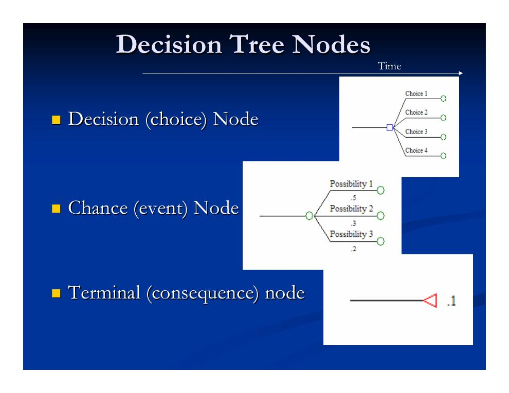
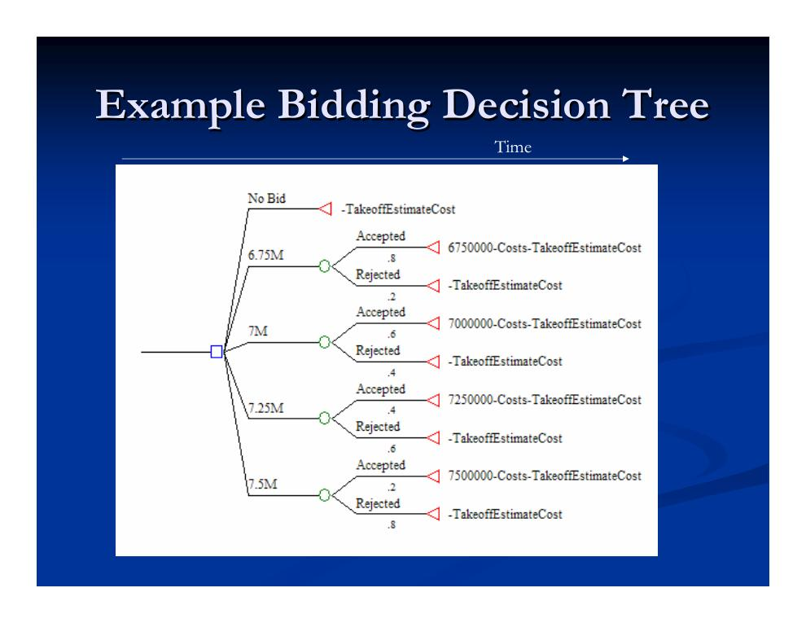
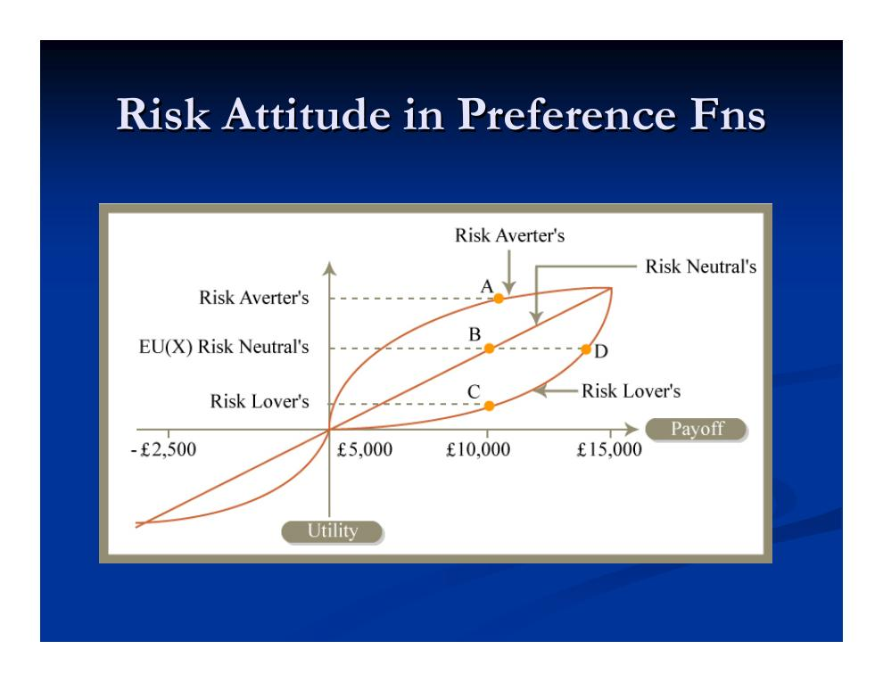
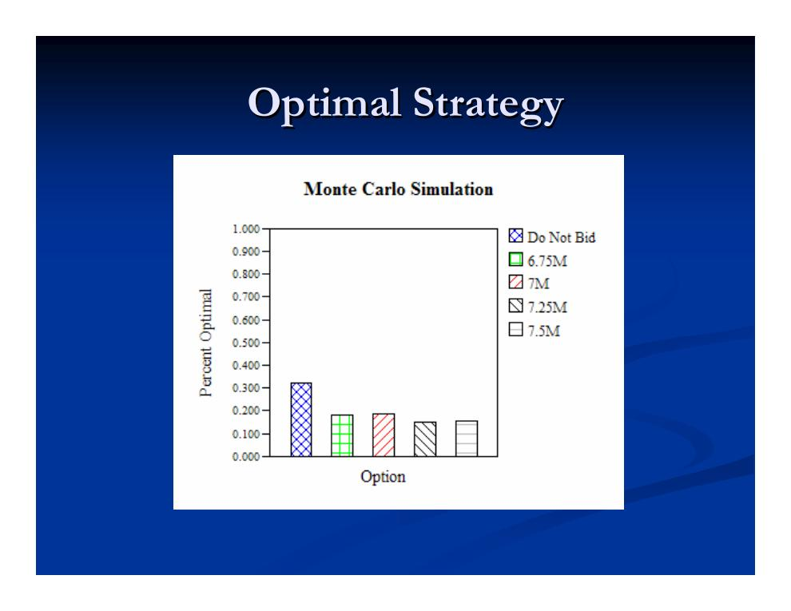
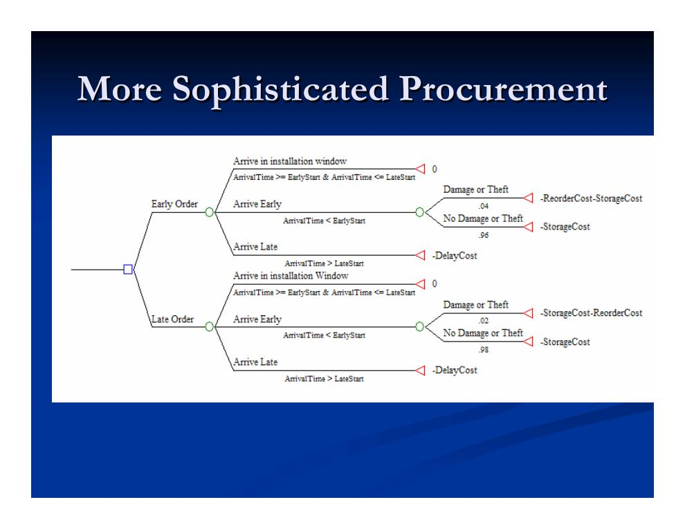
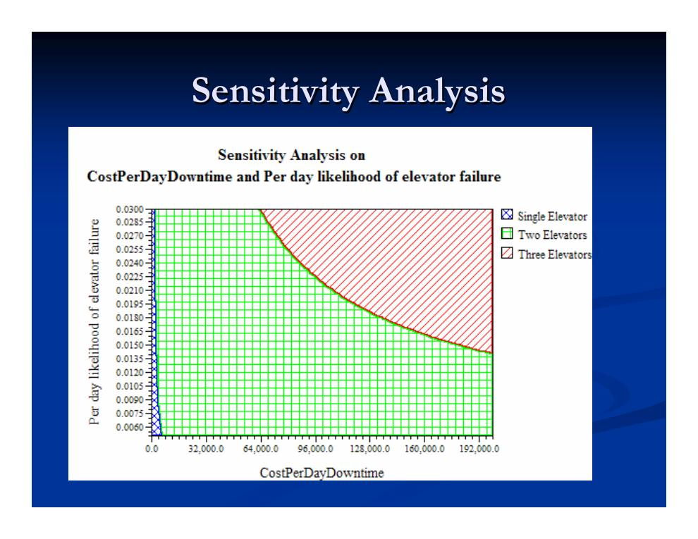

- Entscheiden unter Risiko: Überblick
- Entscheidungsbäume: die Bausteine
- Einfache Beispiele: Bieten, Aufzüge, Elektrokapazität
- Risikopräferenz, Risikoeinstellung und Risikoprämie
- Mehrere Zielgrößen und Pareto-Optimalität
- Analyse mit Entscheidungsbäumen und Sensitivitätsanalyse
- Flexibilität und Realoptionen
Entscheiden unter Risiko: Überblick
Kapitel 1.3 endete mit der Einsicht, dass NPV und IRR sichere Zahlungsströme voraussetzen – die es in Bauprojekten selten gibt. Diese Vorlesung liefert die Konzepte und Instrumente für Entscheidungen unter Risiko, in fünf Schritten:
- Entscheidungsbäume zur Darstellung von Unsicherheit,
- Beispiele einfacher Entscheidungsbäume,
- Risikopräferenzen, Risikoeinstellung und Risikoprämien,
- Entscheidungsbäume als Analysewerkzeug,
- Flexibilität und Realoptionen.
Entscheidungsbäume: die Bausteine
Ein Entscheidungsbaum bildet vier Dinge ab: den Zeitverlauf (von links nach rechts), Entscheidungen, Unsicherheiten (als Ereignisse) und Konsequenzen (deterministisch oder stochastisch). Dafür gibt es drei Knotentypen:
- Entscheidungsknoten (Decision/Choice Node, Quadrat)
- Hier wählt der Entscheider selbst zwischen mehreren Handlungsoptionen (Ästen).
- Ereignisknoten (Chance/Event Node, Kreis)
- Hier entscheidet der Zufall: Jeder Ast steht für einen möglichen Ausgang und trägt seine Eintrittswahrscheinlichkeit; die Wahrscheinlichkeiten aller Äste summieren sich zu 1 (z. B. 0,5 / 0,3 / 0,2).
- Endknoten (Terminal/Consequence Node, Dreieck)
- Hier endet ein Pfad; der Knoten trägt die Konsequenz (z. B. den Gewinn oder die Kosten) dieses Pfades.

Einfache Beispiele: Bieten, Aufzüge, Elektrokapazität
Das Standardbeispiel des Kurses ist die Angebotsentscheidung eines Bauunternehmers: Bietet er überhaupt – und wenn ja, zu welchem Preis? Der Baum beginnt mit einem Entscheidungsknoten (kein Angebot, 6,75 Mio. $, 7 Mio. $, 7,25 Mio. $ oder 7,5 Mio. $). Auf jede Angebotshöhe folgt ein Ereignisknoten: Wird das Angebot angenommen oder abgelehnt? Je niedriger der Preis, desto höher die Zuschlagswahrscheinlichkeit (0,8 – 0,6 – 0,4 – 0,2). Die Endknoten tragen die Konsequenzen: bei Zuschlag „Angebotssumme minus Baukosten minus Kalkulationskosten", sonst nur die verlorenen Kalkulationskosten (Kosten der Mengenermittlung, „Takeoff Estimate Cost").

Nach demselben Muster lassen sich viele Bauentscheidungen strukturieren – die Folien zeigen etwa die Wahl der Aufzugsanzahl eines Gebäudes und die Wahl der gewünschten elektrischen Anschlusskapazität. Der Bieterbaum lässt sich zudem verfeinern, indem auch die eigenen Baukosten und die Gebote der Konkurrenz als stochastische Größen (Ereignisknoten) modelliert werden.
Zur Auswertung eines Baums dient zunächst der Erwartungswert: Jeder Handlungsoption wird der mit den Wahrscheinlichkeiten gewichtete Mittelwert ihrer Konsequenzen zugeordnet; am Entscheidungsknoten wählt man die Option mit dem besten Erwartungswert.
Risikopräferenz, Risikoeinstellung und Risikoprämie
Der Erwartungswert allein greift jedoch zu kurz, denn Menschen sind gegenüber Unsicherheit nicht indifferent. Die fehlende Gleichgültigkeit rührt von ungleichen Präferenzen für verschiedene Ausgänge her – jemand kann den Verlust von x $ weit stärker verabscheuen, als er den Gewinn von x $ schätzt. Wie gut jemand Unsicherheit erträgt, hängt von Umständen und Vorlieben ab; risikoscheue Personen zahlen Risikoprämien, um Unsicherheit zu vermeiden. Man unterscheidet drei Risikoeinstellungen (Risk Attitudes):
- Risikoscheu (risk averse): fürchtet Verluste und sucht sichere Gewinne,
- risikoneutral: ist gegenüber Unsicherheit indifferent und rechnet nur mit Erwartungswerten,
- risikofreudig (risk loving): hofft auf den „großen Wurf".
Die Risikoeinstellung ändert sich mit der Zeit und mit den Umständen. Formal erfasst wird sie durch eine Präferenzfunktion (Nutzenfunktion): Sie drückt aus, wie zufrieden eine bestimmte Partei mit verschiedenen Ausgängen ist – gemessen in Geld, Zeit, Konfliktniveau, Qualität usw. Sie lässt sich systematisch herleiten, indem man den Nutzenwert für einige Ausgänge erfragt und dazwischen interpoliert. Bei Unsicherheit über die Konsequenzen ist die Option mit der höchsten mittleren Präferenz die beste Strategie für diese Partei.

Sicherheitsäquivalent: ein Zahlenbeispiel
Eine risikoscheue Person mit Präferenzfunktion f steht vor einer Investition c, die mit 50 % Wahrscheinlichkeit 20.000 $ und mit 50 % Wahrscheinlichkeit 0 $ einbringt:
- Mittlerer Geldertrag: 0,5 × 20.000 $ + 0,5 × 0 $ = 10.000 $
- Mittlere Zufriedenheit: 0,5 × f(20.000 $) + 0,5 × f(0 $) = 0,25
- Dieselbe Zufriedenheit 0,25 bietet aber schon ein sicherer Betrag von f−1(0,25) = 5.000 $ – das Sicherheitsäquivalent (Certainty Equivalent) der Investition.
- Die Person sollte die unsichere Investition also gegen jeden sicheren Betrag über 5.000 $ eintauschen.
Daraus ergibt sich die Risikoprämie: Die risikoscheue Person wäre bereit, einer weniger risikoscheuen Partei bis zu 5.000 $ (= 10.000 $ − 5.000 $) dafür zu zahlen, dass diese ihr die 10.000 $ garantiert. Beide gewinnen: Die andere Partei erhält im Mittel die Prämie, die risikoscheue Person ist zufriedener. Risikoprämien begegnen uns überall – Versicherungsprämien, höhere Honorare des Bauherrn für renommierte Bauunternehmer, höhere Preise des Unternehmers für riskante Arbeiten, niedrigere Renditen risikoarmer Anlagen und Geld, das für Flexibilität als Schutz gegen Risiko ausgegeben wird.
Allgemein, mit E[·] als Erwartungswert-Operator und nichtlinearer Präferenzfunktion f:
Mehrere Zielgrößen und Pareto-Optimalität
Häufig zählen mehrere Attribute zugleich: Kosten, Zeit, Qualität, die Beziehung zum Bauherrn. Endknoten von Entscheidungsbäumen können all diese Größen erfassen – für eine Gesamtentscheidung müssen die Attribute aber vergleichbar gemacht werden.
Selbst wenn sich die Attribute nicht direkt gegeneinander abwägen lassen, kann man Konsequenzen teilweise ordnen: Entscheidungen, deren Konsequenzen in allen Attributen schlechter sind als die einer anderen, scheiden aus – sie werden von dieser „dominiert". Eine Entscheidung heißt Pareto-optimal, wenn keine andere Entscheidung sie dominiert. Der Kerngedanke: Man kann vielleicht nicht die beste Entscheidung identifizieren – aber offensichtlich schlechte lassen sich sicher ausschließen.
Analyse mit Entscheidungsbäumen und Sensitivitätsanalyse
Entscheidungsbäume sind ein mächtiges Analysewerkzeug – erst recht, wenn man sie um symbolische Größen (Variablen statt fester Zahlen) erweitert. Typische Auswertungen sind die Strategiewahl, ein- und mehrdimensionale Sensitivitätsanalysen und der Wert von Information.
Am Bieterbaum zeigen die Folien exemplarisch, wie die Analyse abläuft: Für jede Angebotshöhe wird die Verteilung des Geldwerts berechnet (etwa für das 6,75-Mio.- und das 7-Mio.-Gebot), einmal rein monetär und einmal unter Einbeziehung der Risikopräferenzen. Anschließend wird untersucht, wie sich größere Kostenunsicherheiten auswirken – mit dem Ergebnis, dass die optimale Strategie kippen kann: Was für einen Risikoneutralen optimal ist, muss es für einen Risikoscheuen nicht sein.

Interaktives Beispiel: Bestellzeitpunkt in der Beschaffung
Ein zweites durchgerechnetes Beispiel betrifft die Beschaffung (Procurement): Soll eine Komponente früh oder spät bestellt werden?
- Entscheidung: Bestellzeitpunkt (früh bestellen / spät bestellen),
- Ereignisse: Ankunftszeit (rechtzeitig, zu früh, zu spät) sowie – nur bei zu früher Ankunft – Diebstahl oder Beschädigung im Lager,
- Konsequenzen (Kosten): Verzugskosten, Lagerkosten und ggf. die Kosten einer Nachbestellung (einschließlich Verzögerung).

Die Sensitivitätsanalyse prüft anschließend, wie robust die gewählte Strategie ist: Ein Eingangswert (oder mehrere) wird über eine Bandbreite variiert, und man beobachtet, ab welchen Werten die optimale Entscheidung wechselt. Eindimensionale Analysen variieren eine Größe, mehrdimensionale – wie in Abb. 6 – zeigen für Kombinationen zweier Größen, welche Option jeweils optimal ist.

Flexibilität und Realoptionen
Flexibilität heißt: zusätzliche Wahlmöglichkeiten bereitstellen. Sie hat typischerweise einen Wert, weil sie die negativen Folgen von Unsicherheit abmildert – und Kosten: das Hinauszögern einer Entscheidung, zusätzliche Zeit und den Preis für die „Reserve", die Flexibilität erst ermöglicht.
Im Bauwesen lässt sich Flexibilität auf vielen Wegen sichern:
- alternative Abwicklungsmodelle,
- stützenfreie Spannweiten (für versetzbare Wände),
- zusätzliche Leerrohre für Elektro- und Telefonleitungen, Verkabelung bis in die Räume,
- größere Fundamente und Stützen, breitere Gründungen (für spätere Aufstockung),
- alternative Heizungs- und Elektrosysteme, größere Elektroverteiler, ein zusätzlicher Aufzug,
- Grundstücksreserven für Erweiterungen, sequenzielles (abschnittsweises) Bauen,
- Eventualpläne für Value Engineering (Wertanalyse), Baugrundverhältnisse und die Beschaffungsstrategie.
Eine adaptive Strategie ist eine Strategie, die den Kurs anhand des Beobachteten ändert – also Flexibilität besitzt: Statt starr im Voraus zu planen, plant man ausdrücklich ein, sich an die Ereignisse anzupassen, typischerweise indem eine Entscheidung in die Zukunft verschoben wird.
Die Realoptionstheorie (Real Options) liefert ein Verfahren, den finanziellen Wert von Flexibilität zu schätzen – etwa der Option, ein Werk aufzugeben oder ein Gebäude zu erweitern. Ihre Kernerkenntnis: Der klassische NPV funktioniert bei unsicheren Kosten und Erlösen schlecht; so lässt sich z. B. die Option, eine Investition abzubrechen, kaum abbilden. Ereignisse werden stattdessen mit stochastischen Differenzialgleichungen modelliert und numerisch oder analytisch gelöst; herleiten lässt sich der Ansatz auch aus dem Entscheidungsbaum-Rahmen. Die Folien illustrieren dies am Beispiel der Flexibilität der Tragwerksform.